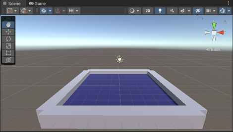

- 1.项目欣赏
- 点击访问简化版 点击访问提高版
- 2.项目需求
- .创建3D游戏，利用AWSD或方向键控制玩家（小球）吃掉平台中的怪物（菱形方块）；每吃掉一个怪物，积分增加1，同时伴随有音效；吃掉所有怪物后，游戏结束，显示获得胜利的字样。
- 3.操作技能
-
项目 Project 视图 View 组件 Component 材质 Material 脚本 Script 资源商店 Asset Store 包 Package 发布 Publish - 4.开发技能
-
游戏对象 GameObject 刚体 Rigidbody 碰撞 Collide 用户界面 UI 预制件 Prefab 相机 Camera 天空盒 Skybox 音频 AudioResource
- 1. 创建3D项目；
- 2. 根据需要调整自己喜欢的布局layout；
- 3. 在Game视图中调整分辨率；
- 4. 创建plane作为桌面desktop，reset属性后，保持默认大小10*10个单位；创建材质球desktop，修改桌面外观[创建材质文件夹material]；
- 5. 对齐视图：便于观察，调整Scene视图为正向视图：z轴朝前；x轴朝右；y轴朝上，如图1； 右键单击相机，选择对其到视图align with view，使得Scene视图和Game视图保持一致；
- 6. 创建cube为桌面围栏fence，reset属性后，保持默认大小1*1单位；创建材质球fence，为围栏着色；
- 7.创建预制件：在项Project的Assets中创建预制件文件夹Prefab，将已经设置好的fence对象拖入，自动生成预制件，方便后续的重复使用；保持当前对象不变，在监视视图Inspector中将其隐去；
- 8. 第一个围栏：从预制件文件夹中拖入一个围栏到场景中，设置围栏大小和位置：x缩放为10倍，z轴前向移动5个单位：移动到地面远端[前]；
- 9. 第二个围栏：保持第一个围栏为选中状态，CTRL+D，复制一个围栏，更名为fence1；保持大小为10倍，z轴后移为-5：移动到地面近端[后]；
- 10. 第三个围栏和第四个围栏：同样的操作，再分别复制俩个围栏，fence2、fence3，设置大小和位置属性：调整到地面的左右两侧；如图2；
- 11. 创建一个空物体fences，将4个围栏fence、fence1、fence2、fence3拖到fences下面，形成父子化，便于整体管理 [归类]；
- 12. 创建sphere为小球ball，初始化物体transform属性，使其位于世界坐标中心，最后设置y为0.5，使其位于桌面之上；选择一张喜欢的图片，如图3，拖动到材质文件夹，作为外部材质为小球着色，系统会自动创建一个当前图片的材质球文件夹；最终效果如图4。
- 
-

- []
- . 所有资源按照文件夹的形式分类存放；
- . 桌面和围栏可以使用自己喜欢的图片作为材质导入并使用；
- . 不要在播放模式下编辑场景；
- . 为了调整物体属性方便，通常先在Inspector视图中reset一下，使其位于世界中心；
- [] 如何调整使得围栏没有缺口? 初步交流并体会将围栏做成预制件的优势；

- 1. 为玩家小球添加刚体组件rigidbody，使其具有真实世界的物理属性；同时会自动添加碰撞组件sphere collider；
- 2. 使用键盘事件让小球动起来；创建script文件夹，创建C#脚本move.cs，双击打开链接的外部编辑器editor，添加鼠标事件，参考代码如下：
-
using System.Collections; using System.Collections.Generic; using UnityEngine; public class move : MonoBehaviour { // 定义刚体变量 Rigidbody rb; void Start() { // 游戏开始时获取当前游戏对象的刚体 rb=GetComponent<Rigidbody>(); } void Update() { // 当键盘asdw或方向键按下时，获取水平和垂直方向的移动[-1, +1] float h = Input.GetAxis("Horizontal"); float v = Input.GetAxis("Vertical"); // 将获取的位移作为力加到刚体上，使其运动起来 rb.AddForce(new Vector3(h,0,v)); } } - 3. CTRL+S保存并返回unity；等系统自动更新完毕后，播放场景，按下A、W、S、E或方向键，查看小球的前后左右滚动效果；根据需要调整力变量的大小；如：rb.AddForce(new Vector3(h,0,v)*5);
- [] Input Manager
- Edit->Project Setting->Input Manager->Axes，查看水平轴Horizontal和垂直轴的设定Vertical；
- [] 获取刚体RigidBody的方法
- . 在脚本中定义私有private变量获取：rb=GetComponent<Rigidbody>()；
- . 在脚本中定义公有public变量，将游戏对象的刚体组件拖动到监视视图的属性窗口获取；
- . 在脚本中定义公有public变量，将游戏对象拖动到监视视图的属性窗口，系统会自动获取游戏对象的刚体组件；
- [] 开发文档API的使用：Help->Unity Manual或访问Unity官网；
- 1. 利用cube创建怪物monster，设置大小和位置、材质等属性，使其位于地面之上，如图5。怪物材质同样应该放在材质文件夹中；
- 2. 让怪物动起来：为了增加动态效果，创建一个旋转的脚本rotate.cs，挂载到怪物上，其绕y轴转起来，参考代码如下：
-
using System.Collections; using System.Collections.Generic; using UnityEngine; public class rotate : MonoBehaviour { void Update() { // y轴旋转，其他轴保持不变 transform.Rotate(0,1,0); } } - 3.创建怪物预制件：在层级视图Hierarchy中，将怪物拖动到prefab中，系统自动生成一个预制件，拖动若干怪物到场景视图Scene，分别命名为monster1、monster2、等等，并创建一个空游戏对象monsters来包含所有的怪物；如图6；运行游戏 ，查看小球在滚动过程中和怪物的碰撞情况；
- 1. 碰撞检测：修改玩家小球挂载的脚本move.cs，增加碰撞检测函数如下。返回项目，运行游戏 ，查看console视图中小球和怪物碰撞的情况；
-
private void OnCollisionEnter(Collision collision) { print(collision.gameObject.name); } - 2. 为了判断和怪物的碰撞，采用标签的形式标记怪物：选择怪物预制件monster，在监视窗口Inspector中可以看出，当前未设置任何标签unstaged，如图7；单击unstaged，增加一个标签，标签名为mon，并选择覆盖override，将对预制件的修改应用到其他复制件上。在层级视图Hierarchy中查看，所有的怪物都有了mon标签；如图8，图9，图10；
- 3. 碰撞消灭：修改move.cs，当碰撞的对象标签是mon时，销毁对象；运行游戏 ，查看消灭怪物的情况；
-
private void OnCollisionEnter(Collision collision) { if (collision.gameObject.tag == "mon") { Destroy(collision.gameObject); } } - 4. 触发检测：改进碰撞检测，使过程更顺畅：当前的效果是先碰撞再消灭，所以小球在消灭的过程中会有一个卡顿。应该是在碰撞之前，检测到碰撞就开始消灭。 a. 激活怪物的碰撞触发：选择怪物预制件，激活碰撞触发，并应用override到所有的怪物； b. 修改move.cs：删除或注释掉之前的碰撞检测函数OnCollisionEnter；添加碰撞触发函数OnTriggerEnter；注意函数的形式参数发生了变化，相应的属性获取也不一样；再次运行游戏 ，玩家小球消灭怪物的过程就比较正常了；
-
private void OnTriggerEnter(Collider other) { if (other.tag == "mon") { Destroy(other.gameObject); } } - []
- 1. 分布创建plane、cube和sphere，默认都添加了碰撞组件；调整位置和大小，使得cube、sphere位于plane之上；
- 2. 为sphere添加刚体，创建脚本并挂载碰撞检测过程提供的代码；
- 3. 运行游戏并在场景视图Scene中拖动sphere撞击cube，查看碰撞的过程；
- 4. 为脚本添加碰撞触发检测过程提供的脚本；勾选cube碰撞组件的：Is Trigger选项；
- 5. 再次运行游戏，在场景视图Scene中拖动sphere撞击cube，查看碰撞触发检测的过程；
- 6. 取消cube的碰撞组件，再次查看碰撞检测和碰撞触发检测的情况；
- [碰撞检测过程]
- 碰撞开始enter -> 碰撞持续stay -> 碰撞结束exit
-
private void OnCollisionEnter(Collision collision) { if (collision.gameObject.tag == "cube") { print("collision enter"); } } private void OnCollisionStay(Collision collision) { if (collision.gameObject.tag == "cube") { print("collision stay"); } } private void OnCollisionExit(Collision collision) { if (collision.gameObject.tag == "cube") { print("collision exit"); } } - [碰撞触发检测过程]
- 进入碰撞检测区域enter -> 持续处于碰撞检测区域stay -> 离开碰撞检测区域exit
-
private void OnTriggerEnter(Collider other) { if(other.tag == "cube") { print("trigger enter"); } } private void OnTriggerStay(Collider other) { if (other.tag == "cube") { print("trigger stay"); } } private void OnTriggerExit(Collider other) { if (other.tag == "cube") { print("trigger exit"); } } - [] 碰撞组件：是给别人用来做碰撞检测或触发检测的，不是给自己用的；为了更真实的反应物理现象，双方都需要有碰撞组件；游戏对象创建时默认都带有碰撞组件；碰撞区域bounding的选择和编辑；
- [] 碰撞检测；
- [] 碰撞触发检测；
- [] 利用标签识别游戏对象；
- [] 游戏对象销毁Destroy；
- Declaration
- public static void Destroy(Object obj, float t = 0.0F);
- Parameters
-
obj The object to destroy. t The optional amount of time to delay before destroying the object. - [] 开发文档API的使用：Help->Unity Manual或访问Unity官网；
- [] 体会碰撞的几个阶段；体会标签的作用；
- 1. 添加UI中的text组件[传统legacy类]，层级Hierarchy视图会额外增加画布canvas和相应的事件处理系统EventSystem； 画布自动覆盖游戏窗口，播放时将出现在游戏画面上层，用于引导玩家。为了便于观察，双击画布canvas，使其位于屏幕中心，同时调整场景视图Scene模式为2D。
- 2. 选择text组件，命名为grade，同时在监视视图Inspector中修改其字体、大小、颜色等属性。
- 3. 位置调整：将text组件grade放于屏幕中心：组件中心和定位标记重合。快速定位：选择grade组件，单击定位框，按住ALT，选择水平居中和顶部居中图例，或根据需要可以调整到其他位置；如图11、图12；
- 4. 修改玩家小球的脚本move.cs，增加计分的逻辑；保存并返回游戏；
-
using System.Collections; using System.Collections.Generic; using UnityEngine; using UnityEngine.UI; public class move : MonoBehaviour { // 定义刚体变量 Rigidbody rb; public Text scoreTexts; int score=0; void Start() { // 游戏开始时获取当前游戏对象的刚体 rb=GetComponent<Rigidbody>(); } void Update() { // 当键盘asdw或方向键按下时，获取水平和垂直方向的移动 float h = Input.GetAxis("Horizontal"); float v = Input.GetAxis("Vertical"); // 将获取的位移作为力加到刚体上，使其运动起来 rb.AddForce(new Vector3(h,0,v)*5); } private void OnTriggerEnter(Collider other) { if (other.tag == "mon") { score++; scoreTexts.text=score.ToString(); Destroy(other.gameObject); } } } - 5. 先选择玩家小球，再把grade组件拖到小球ball监视视图inspector中，move.cs脚本所定义的scoreTexts得分属性框。运行游戏 ，查看得分情况；
-

- [] 传统UI的使用；
- [] 游戏对象的获取；组件的获取；
- [] 变量的声明、初始化和传递；
- [] 体会UI的使用；

- 1. 胜利提示信息：使用同一个text；使用另外一个text，一开始隐藏，当胜利后显示出来。提示：利用游戏对象GameObject的API实现：SetActive(true/false)；
- 2. 音频组件Audio Resource；点击下载音效文件资源包或自行查找；
- 3. 相机跟随：保持相机和玩家小球的相对位置position不变；参考代码如下：
-
using System.Collections; using System.Collections.Generic; using UnityEngine; public class camFollow : MonoBehaviour { public Transform ball; Vector3 offset; void Start() { offset=transform.position-ball.position; } void Update() { transform.position=ball.position+offset; } } - 4. 天空盒的使用：点击访问资源商店Assets Store查找；点击下载天空盒资源包；个人分享收集；
- File -> Build Settings...
- 1. 添加场景Scenes In Build；
- 2. 选择平台并切换Switch Platform；
- 3. 其它特别选项设置，如WebGl的播放选项Player Setting...；
- 4. 发布或发布并预览Build 或Build And Run；
- []平台切换过程中，可能会提示下载对应的扩展包；
- 开发技能 Skills
- . 基本视图：场景Scene、层级Hierarchy、游戏Game、项目Project、调试Console
- . 基本游戏物体：cube、sphere、plane
- . 常见组件：变换、材质、刚体、碰撞、脚本
- . 预制件：open修改；override修改
- . 脚本控制游戏对象/组件的基本思路、变量的传递
- . 脚本常见生命周期函数：Start()、Update()
- . 常用方法：Translate()、Rotate()、addForce()
- . UI：Text
- . 发布Building：桌面端Window、安卓Android、移动端网页WEBGL
- 计算思维 Computing
-
架构设计流程控制规范开发团队合作
- 作业讲评
- 1. 未按要求提交：格式错误；内容缺失；内容错误；
- 2. 文件、资源命名不规范；没有合理利用文件夹收纳归类；
- 3. 体积过于庞大；
- 4. 设计感体现不够；
- 5. API过时；
- CS0619 “GUITexture”已过时:“GUITexture has been removed. Use UI.Image instead.”
- CS0619 “GUIText”已过时:“GUIText has been removed. Use UI.Text instead.”